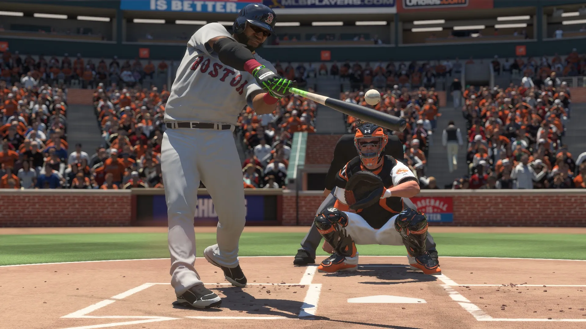

College Baseball Legacy — Dev Log #001
October 16–23, 2026 | Project Foundation

Every great project starts somewhere. For College Baseball Legacy, it started with a simple question:
What if we could bring the gameplay of MLB The Show to college baseball on PC?
College Baseball Legacy (CBL) is an ambitious project being developed under Orange Power Labs. Our ultimate goal is to create a fully featured college baseball experience using the foundation of MLB The Show 16, originally released for PlayStation 3.
But before we can begin replacing MLB teams with college programs, building NCAA conferences, or implementing the Road to Omaha, we have to solve a much bigger challenge.
We need to get the original game running natively on Windows.
Why MLB The Show 16?
After evaluating several baseball games and their potential for extensive modding, we selected MLB The Show 16 for PS3.
The game provides a sophisticated baseball simulation engine, a substantial collection of professional and minor-league teams, and a strong gameplay foundation.
Our long-term plan is to transform that foundation into a college baseball experience with NCAA teams, conferences, schedules, rankings, postseason tournaments, and eventually much more.
The Recompilation Approach
Rather than relying on a traditional PlayStation 3 emulator, we're pursuing a technique known as static recompilation.
In simplified terms, recompilation translates the original game's machine instructions into code that can be compiled and executed on a different platform.
We're using the open-source ps3recomp framework as the foundation of this process.
The objective is to produce a native Windows executable while rebuilding the supporting systems that the original game expects from PS3 hardware and software.
This isn't simply changing a few files or creating a texture mod. It involves understanding and adapting the game's execution environment.
Building Our Development Environment
During our first phase, we established the project's technical foundation:
- Configured Visual Studio, CMake, Ninja, Python, Git, and Windows development tools.
- Created our local development workspace and project directory structure.
- Initialized Git version control.
- Successfully compiled and executed a native Windows C++ test application.
- Obtained and began inspecting the ps3recomp framework.
- Established a workflow using AI-assisted development tools, including Codex and Claude Code.
That first successful native build was modest, but important. It confirmed that our Windows compilation toolchain was operational.
Looking Ahead
Our immediate priority is not college baseball customization.
It's proving that the original game's code can be translated, compiled, linked, and eventually executed correctly on Windows.
Once that foundation is reliable, we'll be in a much stronger position to begin transforming MLB The Show 16 into College Baseball Legacy.
The project is officially underway.
— Orange Power Labs Development Team